pybvh-ml Feature Gallery¶
Every pybvh-ml-specific capability, one picture and one call each — the concepts a data-plumbing library is usually forced to explain in prose: tensor layouts, centering hazards, skeleton graphs, reproducible augmentation, sequence sampling, and batch masking.
Skeleton renders use pybvh's bvhplot; for the plain per-function augmentation before/afters (mirror, rotation, noise on a single skeleton), see pybvh's own gallery — this page draws only what pybvh can't.
If your viewer fails to render any figure or clip, the notebook on nbviewer renders everything.
Generated page
This page is generated from the executed notebook
feature_gallery.ipynb
— download it to run every figure live. Do not edit docs/gallery/
by hand; regenerate with python scripts/export_gallery.py.
Every figure at a glance — click any tile to jump to it.
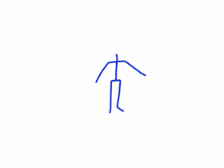
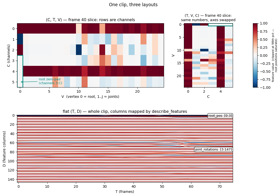
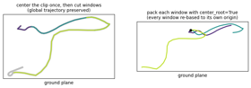
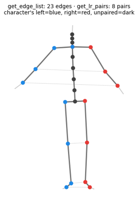
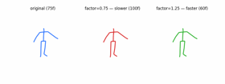
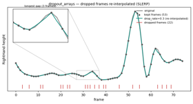
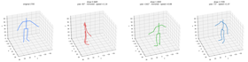
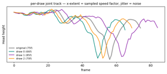
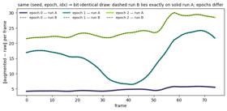
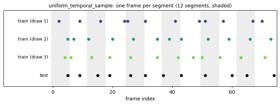
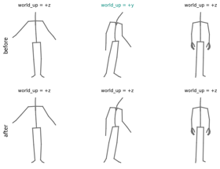
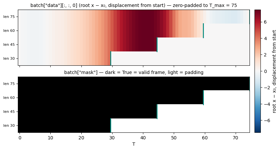
# Pin the inline backend rather than relying on it being the kernel default:
# a shell with MPLBACKEND set (Agg, the headless-CI habit) overrides that
# default, and re-executing here would then capture no figures at all. The
# magic wins over MPLBACKEND, so the notebook renders the same anywhere.
%matplotlib inline
import warnings
import matplotlib
try:
get_ipython # defined inside an IPython / Jupyter kernel
except NameError:
matplotlib.use("Agg") # running this file as a plain script
import matplotlib.pyplot as plt
import numpy as np
from pathlib import Path
from pybvh import read_bvh_file, bvhplot
import gallery_plots as gp
REPO_ROOT = Path.cwd().parent if Path.cwd().name == "gallery" else Path.cwd()
BVH_DIR = REPO_ROOT / "bvh_data"
# Capture load-time warnings (world-up inference notes) and print only their
# messages, so the committed outputs stay portable.
with warnings.catch_warnings(record=True) as caught:
warnings.simplefilter("always")
bvh = read_bvh_file(BVH_DIR / "bvh_test1.bvh")
for w in caught:
print(f"[{w.category.__name__}] {w.message}")
root_pos, jd6 = bvh.to_6d()
_, quats = bvh.to_quat()
print(f"hero clip: {bvh.joint_count} joints, {bvh.frame_count} frames, "
f"world_up {bvh.world_up}")
The hero clip — every figure below draws from this one fixture: 24 joints, 75 frames at 30 fps, +z up. Rendered with bvhplot.render to a real-time GIF committed beside this notebook (resampled to the GIF's 20 fps) and displayed by the markdown cell below — GitHub's notebook renderer silently drops image/gif cell outputs, so an embedded clip would be invisible on github.com. The burst of movement past frame ~50 is what many later figures key on.
1 · Tensor layouts & packing¶
pack_to_ctv / pack_to_tvc / pack_to_flat — one clip, three model-ready layouts. The root is vertex 0; with 6D joint data (C = 6) its channels 3:6 are zero padding, and describe_features maps every flat column back to its feature block. The CTV and TVC slices hold the same numbers — what changes between layouts is the axis order, so the TVC panel is drawn untransposed (V rows, C columns). One diverging color scale everywhere: red = positive, blue = negative, white ≈ 0, clipped at the 98th percentile — the three root-position columns (tens of units, against rotation components bounded by ±1) saturate by design. The dark bands at channels 0 and 4 are the ≈1 entries of near-identity rotations: 6D is the first two rotation-matrix columns, so those channels sit near 1 for joints that barely rotate.
from pybvh_ml import (MotionArrays, pack_to_ctv, pack_to_tvc, pack_to_flat,
describe_features)
hero = MotionArrays(root_pos=root_pos, joint_rot=jd6)
ctv = pack_to_ctv(hero, center_root=False)
tvc = pack_to_tvc(hero, center_root=False)
flat = pack_to_flat(hero, center_root=False)
desc = describe_features(bvh.joint_count, representation="6d")
print(f"CTV {ctv.shape} TVC {tvc.shape} flat {flat.shape}")
fig = gp.fig_layouts(ctv, tvc, flat,
{"root_pos": desc["root_pos"],
"joint_rotations": desc["joint_rotations"]},
frame=40)
plt.show()
center_root — the packers subtract the first frame's root position (on by default). Center the whole clip once and windows keep their place on the global trajectory; pack each window with center_root=True and every window is re-based to its own origin — the trajectory is destroyed. Top view of the hero clip's root path; both panels are drawn from real pack_to_tvc output (the right one from packing each sliding_window slice separately, which is exactly the hazard).
from pybvh_ml import sliding_window
clip_packed = pack_to_tvc(hero) # center_root=True default: whole clip, once
window_packed = [pack_to_tvc(MotionArrays(root_pos=rp, joint_rot=jd)) # same default per window
for rp, jd in zip(sliding_window(root_pos, 32, stride=16),
sliding_window(jd6, 32, stride=16))]
fig = gp.fig_center_hazard(clip_packed, window_packed, stride=16, up_index=2)
plt.show()

2 · Skeleton graph metadata¶
get_edge_list / get_lr_pairs — the topology GCN adjacency matrices are built from: parent/child edges, plus the left/right joint pairs that mirror swaps (detected from joint names via pybvh's L/R heuristics).
from pybvh_ml import get_edge_list, get_lr_pairs, get_body_partitions
edges = get_edge_list(bvh)
lr_pairs = get_lr_pairs(bvh)
fig = gp.fig_graph(bvh, edges, lr_pairs)
plt.show()
get_body_partitions — named body-part groups as joint index lists, for part-based pooling or attention masks.
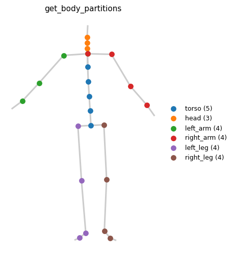
3 · Array-level augmentation¶
speed_perturbation_arrays — resamples the time axis (SLERP between frames): factor < 1 stretches the clip over more frames, factor > 1 compresses it. Speed only exists in time, so this one is rendered, not plotted: side-by-side playback in real wall-clock time — the slow clip lags ever further behind the original, the fast clip finishes early and freezes on its last frame (sync="pad").
from pybvh_ml import speed_perturbation_arrays, dropout_arrays
quat_arrays = MotionArrays(root_pos=root_pos, joint_rot=quats)
slow = speed_perturbation_arrays(quat_arrays,
factor=0.75, representation="quat")
fast = speed_perturbation_arrays(quat_arrays,
factor=1.25, representation="quat")
speed_gif = gp.speed_comparison_gif(
[bvh,
bvh.from_quat(slow.root_pos, slow.joint_rot),
bvh.from_quat(fast.root_pos, fast.joint_rot)],
labels=[f"original ({bvh.frame_count}f)",
f"factor=0.75 — slower ({slow.frame_count}f)",
f"factor=1.25 — faster ({fast.frame_count}f)"])
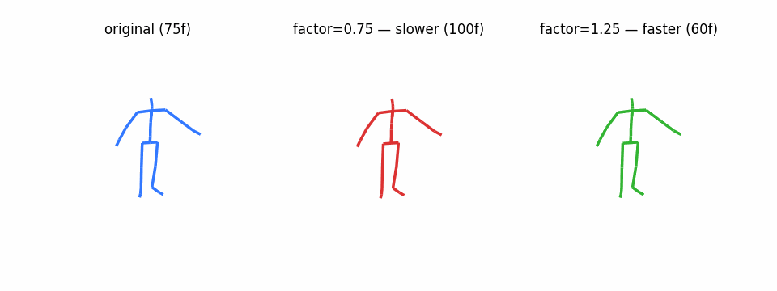
dropout_arrays — drops random frames (Bernoulli per frame, first and last always kept) and SLERP-re-interpolates across the gaps; the frame count is unchanged. On smooth mocap the re-interpolated curve hugs the original — most gaps are 1–2 frames — so the mechanism is drawn explicitly: markers on the frames that survived, a rug of the dropped indices, and an inset zooming on the longest gap, where the interpolation visibly cuts the corner. Dropped frames are found by exact comparison — kept frames pass through bit-identical.
coords = bvh.node_positions()
joint_nodes = [bvh.index(n, space="node") for n in bvh.joint_names]
up = 2 # +z up
lively = int(np.argmax(coords[:, joint_nodes, up].std(axis=0)))
node = joint_nodes[lively]
def joint_height(b, n):
return b.node_positions()[:, n, up]
drop_rate = 0.3
dropped = dropout_arrays(quat_arrays, drop_rate=drop_rate,
representation="quat",
rng=np.random.default_rng(7))
drop_rp, drop_q = dropped.root_pos, dropped.joint_rot
kept = (np.all(drop_q == quats, axis=(1, 2))
& np.all(drop_rp == root_pos, axis=1))
fig = gp.fig_dropout(f"{bvh.joint_names[lively]} height",
joint_height(bvh, node),
joint_height(bvh.from_quat(drop_rp, drop_q), node),
kept, drop_rate=drop_rate)
plt.show()
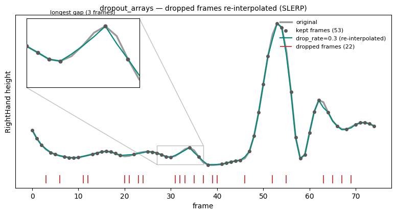
AugmentationPipeline.standard — rotate + mirror + noise + speed wired from a skeleton_info dict, with per-step probabilities and per-sample random parameters. Three independent draws from the same pipeline, on one shared bounding box (per-panel autoscaling would silently absorb the translation and rotation differences). Each panel is captioned with what that draw actually sampled, straight from return_params=True — the subtitle under every panel is the pipeline's own record of the call, not a guess. What a frame-0 still can't show, the joint track below does: each draw's x-extent is its sampled speed factor, the jitter is the 1° rotation noise. The track uses a midline joint deliberately — yaw rotation and mirroring both leave a midline joint's height untouched (a hand track would show the opposite hand on mirrored draws, masquerading as a huge amplitude change), so the curve differences are purely noise + speed.
from pybvh_ml import AugmentationPipeline, get_skeleton_info
skel = get_skeleton_info(bvh)
pipeline = AugmentationPipeline.standard(skel, representation="quat",
up_axis=bvh.world_up)
draws, drawn_params = [], []
for i in range(3):
out_i, steps = pipeline(quat_arrays, rng=np.random.default_rng(i),
return_params=True)
draws.append(bvh.from_quat(out_i.root_pos, out_i.joint_rot))
drawn_params.append(steps)
labels = [f"original ({bvh.frame_count}f)"] + \
[f"draw {i} ({d.frame_count}f)\n{gp.describe_draw(s)}"
for i, (d, s) in enumerate(zip(draws, drawn_params))]
fig, axes = bvhplot.frame([bvh, *draws], frame=0, labels=labels,
camera=(70, 30))
gp.share_3d_limits(axes, [bvh, *draws], frame=0)
# liveliest joint NOT in an L/R pair — mirror swaps paired trajectories
paired = {j for pair in skel["lr_pairs"] for j in pair}
midline = [j for j in range(bvh.joint_count) if j not in paired]
mid = midline[int(np.argmax(
coords[:, [joint_nodes[j] for j in midline], up].std(axis=0)))]
fig2 = gp.fig_draw_tracks(f"{bvh.joint_names[mid]} height",
joint_height(bvh, joint_nodes[mid]),
[joint_height(d, joint_nodes[mid]) for d in draws])
plt.show()
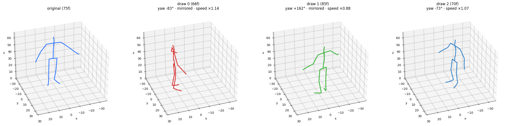
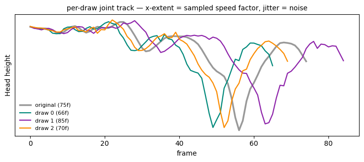
4 · Reproducibility: seed × epoch × index¶
set_epoch — with a seed, the tuple (seed, epoch, idx) feeds a SeedSequence: two runs with the same seed draw bit-identical augmentations (regardless of num_workers or shuffle order), while each epoch still sees a fresh draw. Two independently constructed datasets, three epochs each.
from pybvh_ml.torch import MotionDataset
clip = {"root_pos": root_pos, "joint_rot": jd6}
# speed perturbation changes the frame count, so disable it here to keep the
# per-frame deviation against the raw clip well-defined
pipeline6 = AugmentationPipeline.standard(skel, representation="6d",
up_axis=bvh.world_up,
speed_factor_range=None)
base = MotionDataset([clip])[0]["data"].numpy()
curves = {}
for run in ("A", "B"):
ds = MotionDataset([clip], augmentation=pipeline6, seed=42)
for epoch in range(3):
ds.set_epoch(epoch)
aug = ds[0]["data"].numpy()
curves[(run, epoch)] = np.linalg.norm(aug - base, axis=1)
for epoch in range(3):
same = np.array_equal(curves[("A", epoch)], curves[("B", epoch)])
print(f"epoch {epoch}: run A == run B → {same}")
fig = gp.fig_epoch_determinism(curves)
plt.show()

5 · Sequence tools¶
sliding_window / standardize_length — cut overlapping windows, or pad/crop to an exact length (models want fixed shapes; clips don't have them).
from pybvh_ml import sliding_window, standardize_length
windows = sliding_window(flat, window_size=32, stride=16)
padded = standardize_length(flat, target_length=100, method="pad")
cropped = standardize_length(flat, target_length=50, method="crop")
print(f"windows {windows.shape} padded {padded.shape} "
f"cropped {cropped.shape}")
fig = gp.fig_windows(flat.shape[0], windows.shape, len(padded), len(cropped),
stride=16)
plt.show()
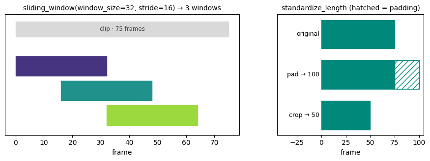
uniform_temporal_sample — PySKL-style sampling for skeleton-based recognition: split the clip into clip_length near-equal segments (integer boundaries i·F//L, so sizes alternate when L doesn't divide F — the shading below uses those exact boundaries), pick one frame per segment. Train mode draws a random offset per segment; test mode is a fixed seeded draw — not segment midpoints — identical on every call.
from pybvh_ml import uniform_temporal_sample
F, L = bvh.frame_count, 12
# seeds 1..3: seed 0 would collide with test mode's internal default_rng(0)
# and render the "test" row as a duplicate of a train draw
train_draws = [uniform_temporal_sample(F, L, mode="train",
rng=np.random.default_rng(i))
for i in (1, 2, 3)]
test_draw = uniform_temporal_sample(F, L, mode="test")
fig = gp.fig_temporal_sample(F, L, train_draws, test_draw)
plt.show()

6 · Preprocessing¶
compute_normalization_stats / normalize_array — per-channel z-score over the flat [root_pos, joint_rot] layout (the Mean.npy / Std.npy convention). How to read it: the raw matrix is saturated horizontal stripes — every channel at its own offset and scale, the "can't feed this to a model" state; after z-scoring, the shared ±3 scale reveals the temporal structure (the motion burst past frame ~50). Channels whose std is ~0 are guarded to 1 and flagged in the constant_channels mask — the dark rows of the vertical strip, normalized to exactly 0 rather than ~N(0, 1).
from pybvh_ml import compute_normalization_stats, normalize_array
stats = compute_normalization_stats([bvh], representation="6d")
flat_norm = normalize_array(flat, stats)
fig = gp.fig_normalization(flat, flat_norm, stats["constant_channels"])
plt.show()
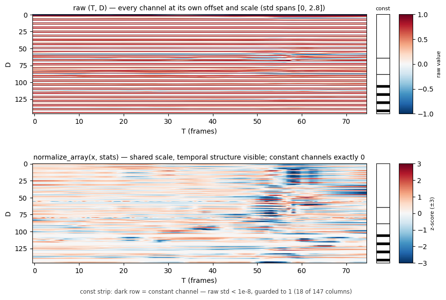
harmonize=True — preprocess_directory's answer to heterogeneous corpora, via pybvh.harmonize: three fixture clips with mixed up-axis conventions, reoriented to one shared convention. Pure reorientation — each actor's bone lengths are untouched (retarget=True opts into unifying those too).
from pybvh import harmonize
with warnings.catch_warnings(record=True) as caught:
warnings.simplefilter("always")
mixed = [read_bvh_file(BVH_DIR / f"{name}.bvh")
for name in ("bvh_test1", "bvh_test2", "bvh_test3")]
unified = harmonize(mixed, target_world_up="+z")
for w in caught:
print(f"[{w.category.__name__}] {w.message}")
print("before:", [b.world_up for b in mixed],
"→ after:", [b.world_up for b in unified])
fig = gp.fig_harmonize(mixed, unified)
plt.show()
[UserWarning] Rest pose suggests world up is '+y' but the first animation frame's head-hips direction is closer to '+z'. Using '+z' from the animation data. If this is wrong for your file, set it explicitly via `bvh.world_up = '<axis>'`.
before: ['+z', '+y', '+z'] → after: ['+z', '+z', '+z']
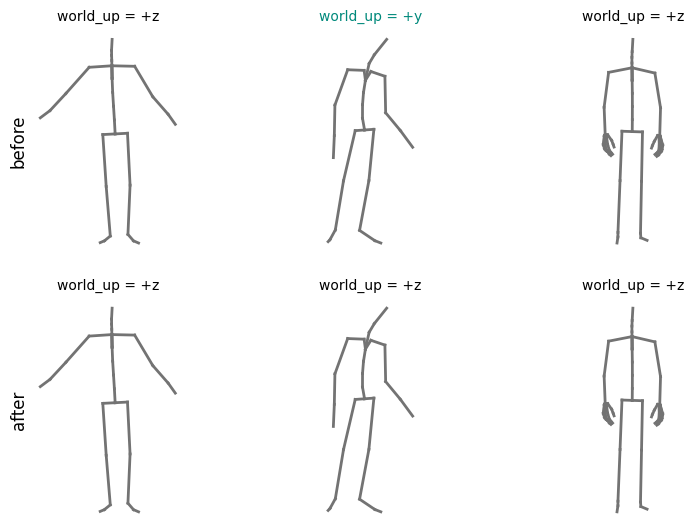
7 · PyTorch batching¶
collate_motion_batch — variable-length clips stacked into one padded tensor plus a validity mask and true lengths. Four slices of the hero clip, batched; the clips are hand-built raw arrays, so the dataset centers them (center_root=True) — an uncentered root coordinate would sit at ~constant tens of units and saturate the heatmap. The data panel shows one channel, the centered root x: color is how far the character has travelled along x since its first frame — red = ahead of the start, blue = behind, white ≈ at the start. Zero padding is also exactly 0, i.e. white — indistinguishable from "at the start" by color alone, which is precisely why the mask exists. Light = padding in both panels; the teal steps mark each row's true length.
from pybvh_ml.torch import collate_motion_batch
lengths = [75, 60, 45, 30]
clips = [{"root_pos": root_pos[:n], "joint_rot": jd6[:n]} for n in lengths]
ds = MotionDataset(clips, center_root=True)
batch = collate_motion_batch([ds[i] for i in range(len(ds))])
print({k: tuple(v.shape) for k, v in batch.items()})
fig = gp.fig_collate_mask(batch, channel=0,
channel_desc="root x − x₀, displacement from start")
plt.show()

Takeaways¶
Every figure above is one pybvh-ml call on real fixture data — no model, no training loop. The User Guide walks the same ground in prose, the API reference has every signature, and the tutorials chain these pieces into a trained classifier.